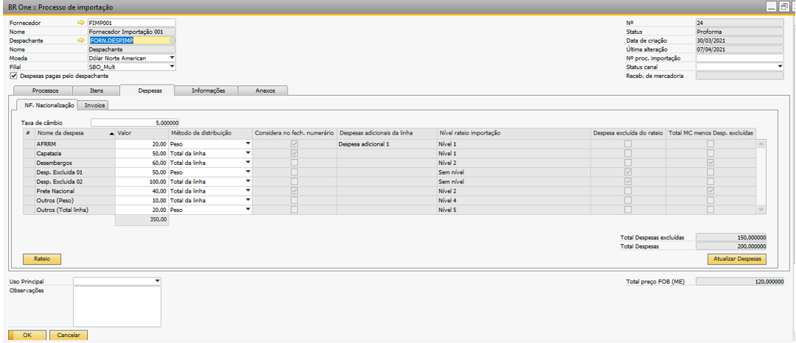
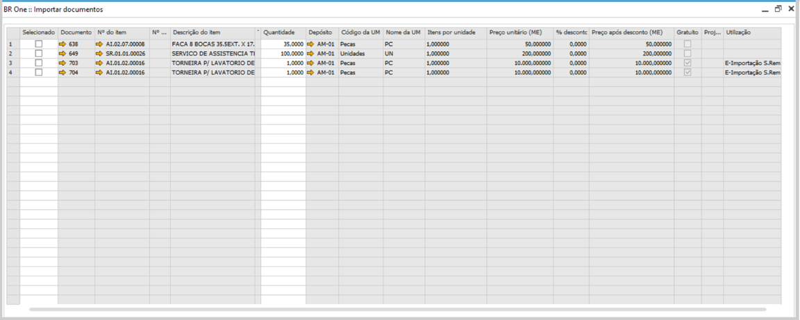
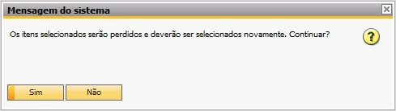
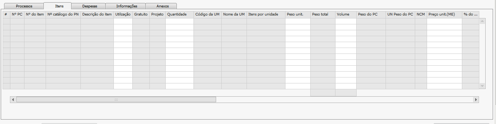

Importar Pedidos de Compra
Após adicionar um documento de processo de importação, clique para ir para o último registro da tela e o processo que acabou de ser adicionado aparecerá, a partir deste momento podemos clicar em importar pedidos a fim de iniciar o processo. Só serão listados os pedidos de compra que contenham no cabeçalho do pedido de compra o mesmo código do PN e a mesma moeda estrangeira. A partir da versão (4.11.319) foi disponibilizado a funcionalidade de importar item não estocável. Itens que são de Cadastro de Ativo e que estejam marcados como serviço não aparecerão.
{kind=link}
A tela de Importar documentos retorna os dados dos documentos de pedidos de compra e exibe as linhas dos itens destes documentos em aberto, pode ser selecionada mais de uma opção, além disso também é possível alterar a quantidade de acordo com o que será importado.
{kind=link}
Após selecionar os itens e suas quantidades, clique em selecionar no rodapé. Os itens selecionados irão para a aba Itens e esta aba será aberta. Se for clicado no botão Importar pedidos com itens na aba itens, a seguinte mensagem será exibida:
{kind=link}
Os itens selecionados serão perdidos e deverão ser selecionados novamente. Continuar?
Se for clicado em Sim, os itens que estiverem na aba “Itens” serão perdidos e deverão ser selecionados novamente.
As únicas colunas que ficarão habilitadas para edição serão as colunas Utilização, Peso unit., Volume, Quantidade e Preço Unit.(ME). Porém, após o processo de Nacionalização realizado, as colunas Quantidade e Preço unit. (ME) serão bloqueadas. As colunas relativas às despesas serão preenchidas após o rateio e na coluna U.M. será trazida a unidade de medida do pedido de compra que deu origem ao processo.
{kind=link}
Possíveis ocorrências durante o processo
Não será possível importar pedidos que estejam com adiantamentos p/ fornecedor, adiantamentos p/ despachante, invoice ou esboços de adiantamentos p/ fornecedor em aberto durante o processo de importação. Caso isso aconteça, ao clicar em Importar Pedidos, a seguinte mensagem será exibida:

BR One :: Não é possível alterar os itens. Processos posteriores já foram gerados.